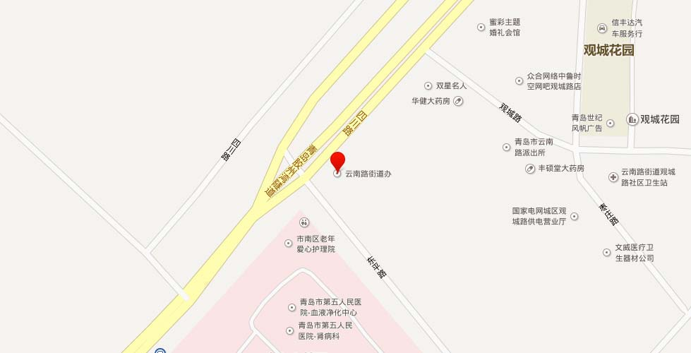

【地址】青岛市市南区四川路50号
【概况】位于市南区西部，东至火车站与中山路街道相邻，北至冠县路与市北区冠县路街道接壤，南至西藏路、费县路与八大峡街道为邻，西靠胶州湾。面积约1.3平方千米。辖6个社区。辖区东西窄、南北长，呈长方形，中间高，四周低，属丘陵地，南北走向。
【沿革】街道以辖区内的一条东西主干道——云南路命名。1952年成立大居委会，1954年设立云南路街道。1996年，面积0.5平方千米，人口2.6万人，辖寿张路、东平中、朝城路、观城路、广州路、云南路、滕县路、邹县路、濮县路、滋阳路、汶上路、四院、邹县路第二、云南路中段14个居委会和电业局家委会。1998年12月，云南路街道、南村路街道合并设立新的云南路街道，办事处人员由原南村路街道办事处人员组成，原云南路街道办事处人员统一调至新设立的珠海路街道。2005年末，人口1.8万余户5万余人，辖9个社区。
【2011年代码及城乡分类】370202004：～001 111寿张路社区 ～002 111莘县路社区 ～005 111四川路社区 ～007 111邹县路社区 ～009 111嘉祥路社区 ～013 111广州路社区
原【南村路街道】成立于1954年12月，办公地址在山西路29号。原属台西区。1963年台西区撤销，划归市南区。1996年，面积0.7平方千米，人口2.3万人，辖莘县路第一、二、三和菏泽路、云南路、南村路、广州路、幸福楼、西江路、四川路、四川路第一、滋阳路、轮渡13个居委会和造船厂、电业局、水产供销公司3个家委会。1998年12月并入云南路街道，机构撤销。
【莘县路社区】1998年6月，莘一、莘二、莘三3个居委会合并为莘县路居委会，2001年3月改为莘县路社区，2004年8月云南路社区撤销并入。位于云南路街道北部。面积约0.2平方千米。2005年末，人口2680户6733人。
【西江路社区】居委会成立于1954年。2001年4月，西江路、菏泽路2个居委会和水产局、4808厂、外贸3个家委会合并为为西江路社区。位于云南路街道西北部。面积约0.22平方千米。2005年末，人口1581户3861人。
【广州路社区】以辖区内主要道路广州路命名。1952年成立广州路北段居委会，当时管辖的户数是300户。2001年，与4808工厂、电业局云南路2个家委会合并为广州路社区。位于云南路街道中北部。管辖范围：广州路1号至23号，四川路2号至34号，枣庄路62号，观城路51号至77号，云南路85号至133号。面积约0.1平方千米。2005年末，人口1600户4600人。
【枣庄路社区】2004年8月，东平路、观城路2个社区合并为枣庄路社区，以贯穿辖区中心的枣庄路命名。位于云南路街道中部。面积约0.1平方千米。2005年末，常住人口2360户6300余人，居民小组60个。
【四川路社区】以区域内唯一一条道路四川路命名。1998年，四川路第一、第二、轮渡、幸福楼等居委会合并为四川路居委会。2001年改为四川路社区，划入原属西江路居委会的幸福楼1-4号楼。2004年划入原滋阳路社区的部分楼院。位于云南路街道西部，面积约0.1平方千米。2005年末，人口1950户4980人。
【嘉祥路社区】2004年8月，由滋阳路、濮县路2个社区合并为嘉祥路社区，以辖区主要道路嘉祥路命名。位于云南路街道中南部。面积约0.15平方千米。2005年末，人口1755户4250人。
【邹县路社区】居委会成立于1952年。以区域中心道路邹县路命名。1999年，邹县路、邹县路第二、云南路中段3个居委会合并为邹县路居委会。2001年改为邹县路社区。2004年，原滋阳路、濮县路2个社区的部分并入邹县路社区。位于云南路街道中南部。面积约0.1平方千米。2005年末，常住人口2472户6180人。
【寿张路社区】居委会成立于1954年。以贯穿区域南北主干道寿张路命名。1958年定陶路居委会并入。2001年改为寿张路社区。2004年，寿张路、汶上路2个社区合并为寿张路社区。位于云南路街道东南部。面积约0.15平方千米。2005年末，人口2340户5700人。
【朝城路社区】居委会成立于1954年，其前身为原云南路街道广州路第二居委会。2001年3月改为朝城路社区。位于云南路街道东部。面积约0.2平方千米。2005年末，人口2196户5537人。